Acme Corp's new e-commerce platform deployment topology, designed for 100k peak queries-per-second across 3 AWS regions (us-east-1, us-west-2, eu-west-1). Show: external CDN (CloudFront) routing to regional Application Load Balancers, then to an API Gateway (Kong), then to 6 backend microservices: User, Catalog, Cart, Checkout, Payment, Order. Each microservice owns its own PostgreSQL database. Catalog also reads from a shared Elasticsearch cluster for product search. Payment integrates with Stripe externally. Order writes to a Kafka event bus, consumed by Analytics in a separate VPC. Each service runs in 3 availability zones for HA. The visual must show the data flow direction for a typical purchase request.
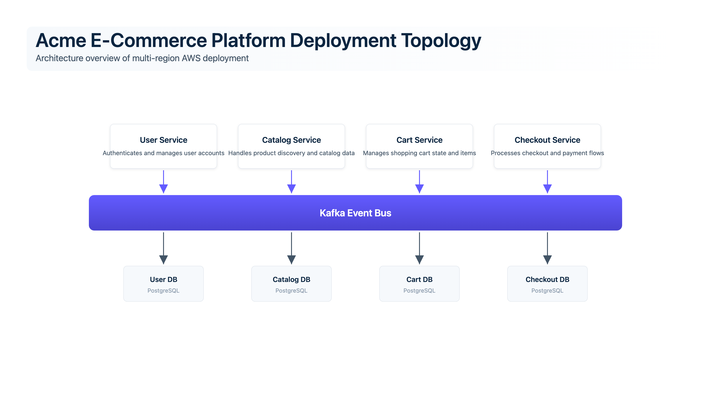
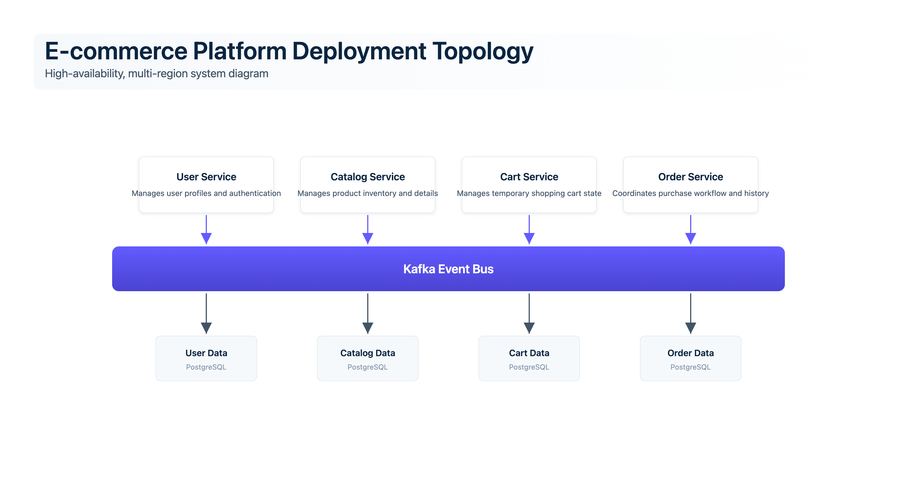
Production Kubernetes cluster topology showing namespace boundaries, ingress, service mesh, and observability. Components: NGINX Ingress Controller at the edge. Istio service mesh providing mTLS between all services. Three application namespaces: 'frontend' (React SPA served from a static deploy + 3-replica nginx pod), 'api' (12 microservices, each a 3-replica Deployment), 'data' (2 StatefulSets for Postgres-HA and Redis-cluster). One platform namespace 'observ' running Prometheus + Grafana + Loki + Tempo. Cert-manager auto-renews TLS. ArgoCD watches GitOps repo and reconciles deployments. Use swimlanes to separate the namespaces visually. Audience: SRE team design review.
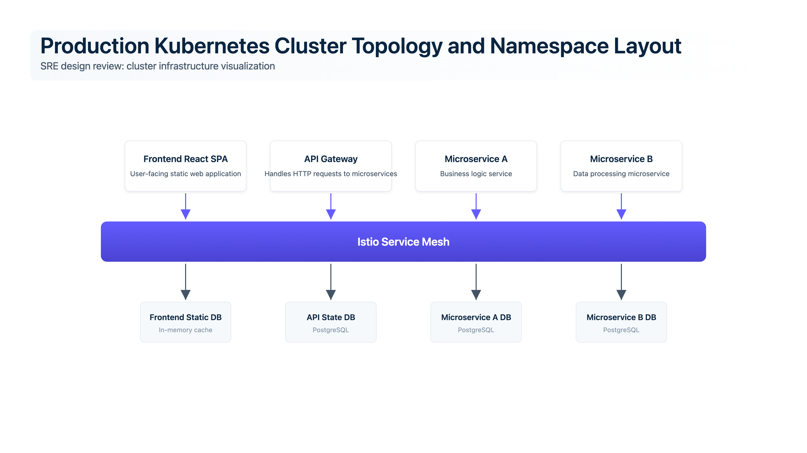
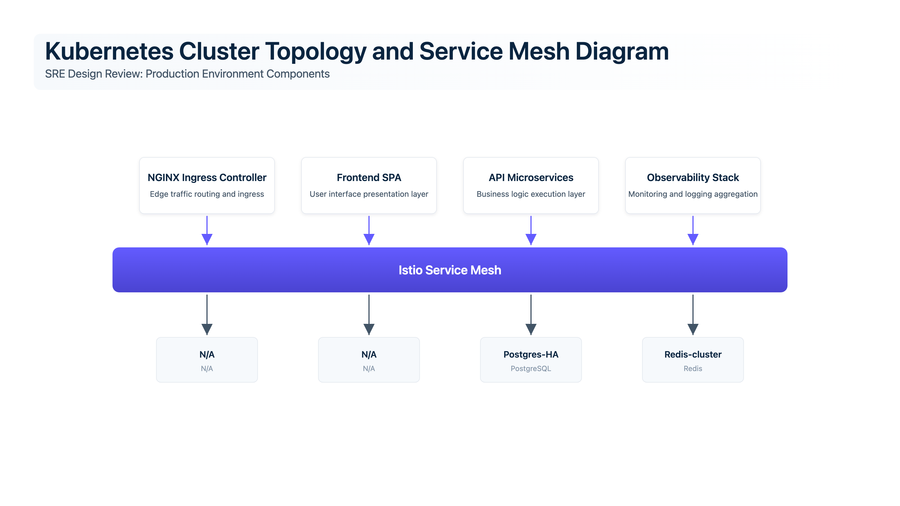
Event-driven CQRS architecture for a financial trading platform. Write path: Trader UI submits order via REST → Order API validates → writes to Order Write-Store (PostgreSQL) → emits OrderPlaced event to Kafka. Read path: Projection service consumes from Kafka → denormalizes into Read-Store (DynamoDB) → Reporting API serves from Read-Store. Volume: 50k orders/sec peak, 99.9% latency under 200ms write, sub-50ms read. Also show: Risk Engine consuming the same Kafka stream for real-time exposure calculations, with a separate output topic for risk alerts. Audience: Chief Architect review board.
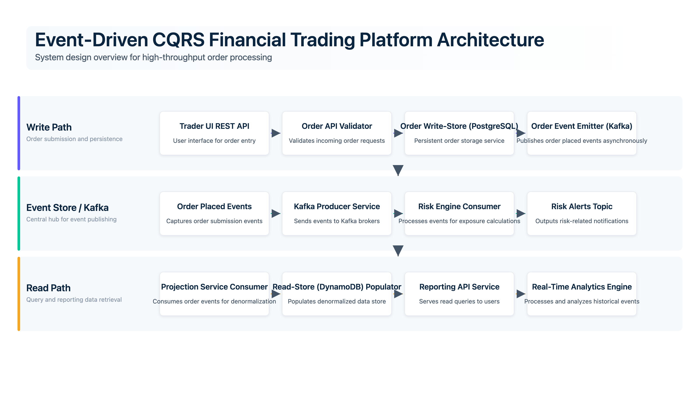
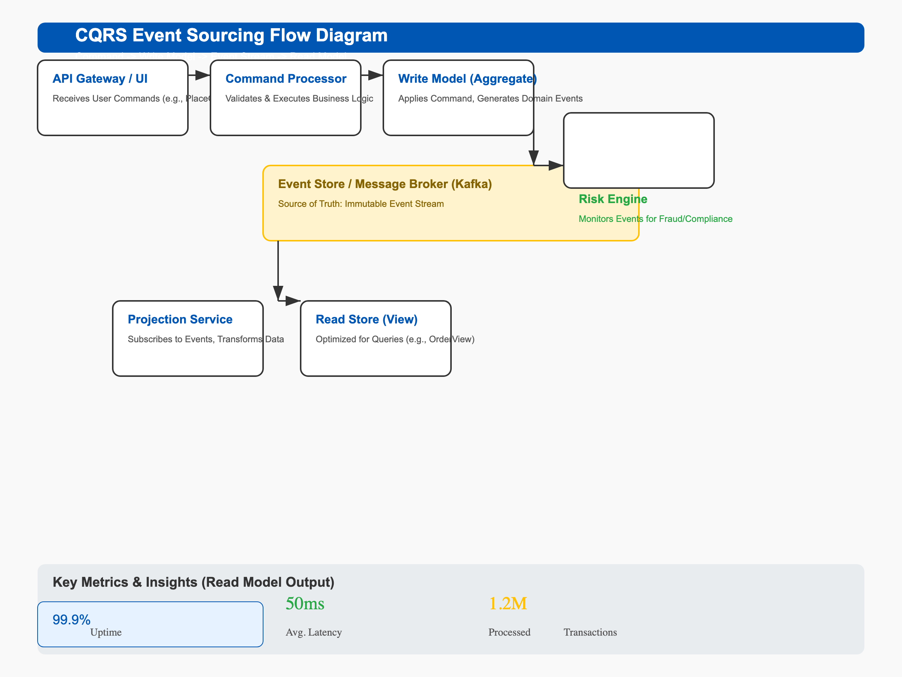
Quarterly performance summary for a B2B SaaS company. Key metrics to feature prominently: ARR $42.3M (up 38% YoY), Net Revenue Retention 124%, Logo Retention 96%, Customer Count 1,840 (up 31% YoY), Average Contract Value $23k, Sales Cycle 47 days, Gross Margin 78%, Cash Burn $1.2M/mo (improving from $1.8M). Highlight: expansion into European market generated $4.1M of the YoY growth. Lowlight: enterprise segment closed-won rate dropped to 18% from 24% last quarter. Make 6 of the metrics the dominant visual elements (large numbers with context). Audience: board of directors quarterly review.
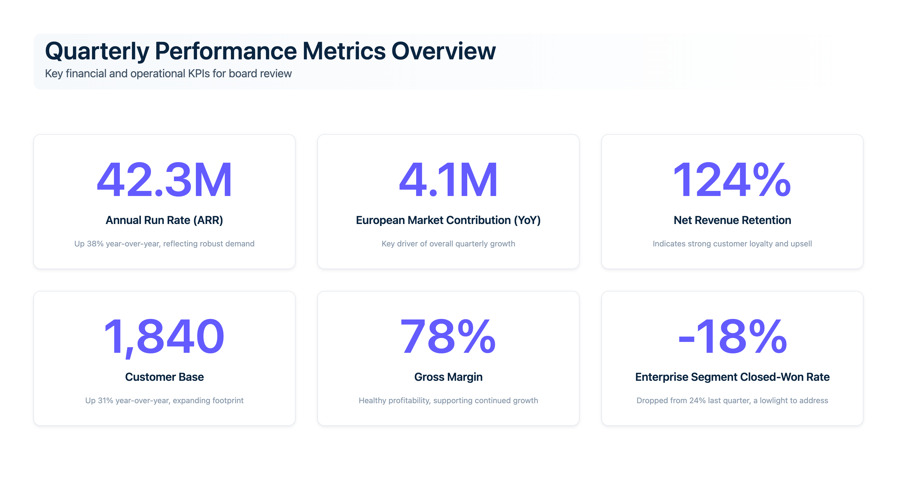
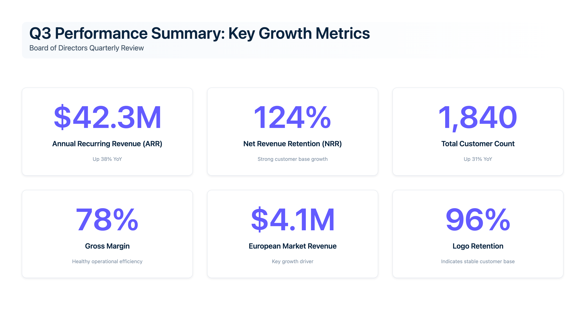
Competitive positioning for the customer data platform market. Two axes: X = Implementation Complexity (low to high), Y = Feature Depth (basic to advanced). 8 competitors to place: Segment (low-complexity, mid-depth), Rudderstack (mid-complexity, mid-depth), mParticle (high-complexity, deep), Tealium (very-high complexity, deep), our product 'DataCanvas' (mid-complexity, advanced), Hightouch (low-complexity, advanced for reverse-ETL only), Census (low, advanced reverse-ETL), Treasure Data (very-high complexity, advanced). Label each quadrant: 'Quick Wins' (top-left), 'Leaders' (top-right), 'Niche Tools' (bottom-left), 'Enterprise Heavy' (bottom-right). Audience: Sales kickoff strategy session — they need to know where we sit relative to deals they'll face.
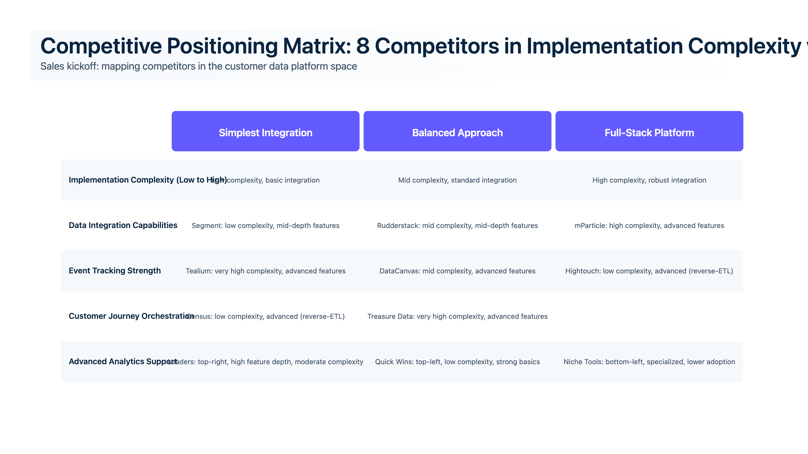
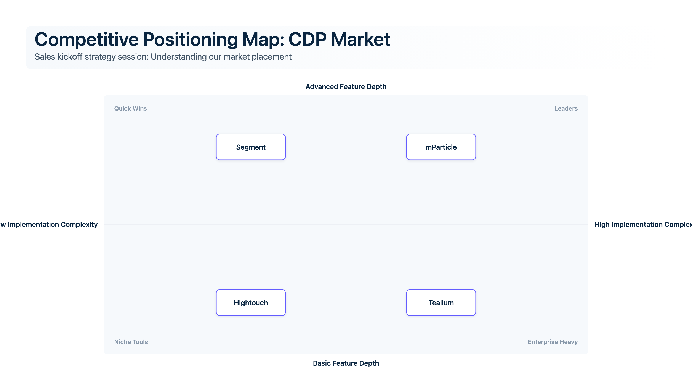
Comparison of AWS cloud costs across our 3 product lines, fiscal year 2026 to-date. Products: Platform ($4.2M total — 62% compute, 23% storage, 10% data transfer, 5% other), Analytics ($1.8M total — 35% compute, 48% storage, 12% data transfer, 5% other), ML Training ($2.7M total — 88% compute on GPU instances, 8% storage, 3% data transfer, 1% other). Reserved instance coverage: Platform 78%, Analytics 92%, ML Training 12%. Highlight the cost-per-customer ratio: Platform $2,280, Analytics $980, ML Training $14,500 (only 186 customers). Compare each category across the three products in a table. Audience: FinOps team + CFO cost-optimization review.
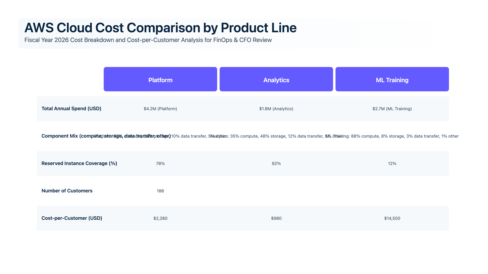
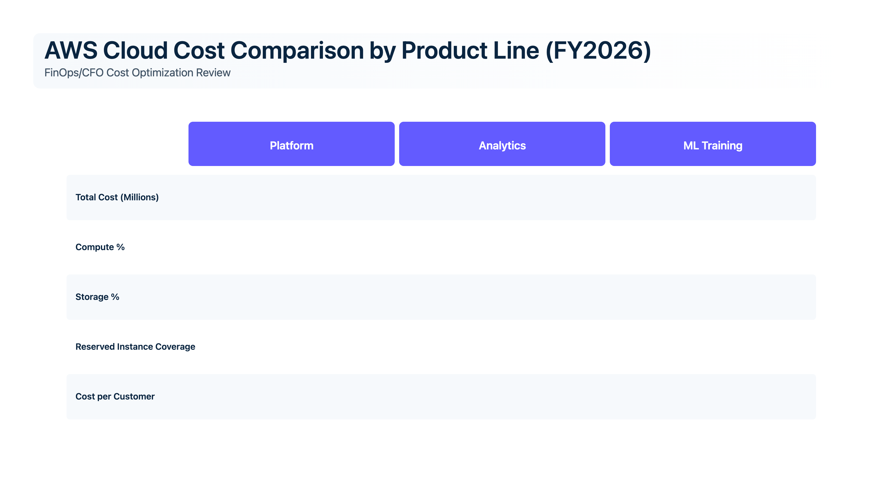
Customer journey for a B2B SaaS company from anonymous visitor to expansion champion. 6 stages: Discover (anonymous visit, 312k/mo), Engage (signup for trial, 18k/mo, 5.8% conversion), Activate (complete onboarding + first integration, 11k/mo, 61% from trial), Convert (start paid plan, 2.4k/mo, 22% activation-to-paid), Expand (grow seat count by 50%+, 380/quarter, 16% of paid), Champion (refer ≥1 new logo OR speak in marketing case study, 92/quarter, 24% of expansion). For each stage list: 2-3 key actions the user takes, the metric tracked, the team that owns it (Marketing, Growth, Product, CS, Sales). Highlight the biggest leak: 78% drop-off between Engage and Activate. Audience: growth team quarterly OKR planning.
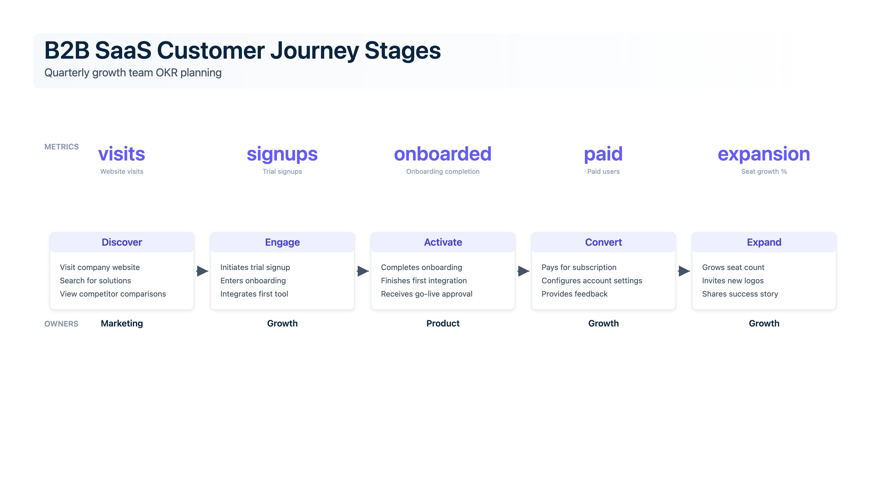
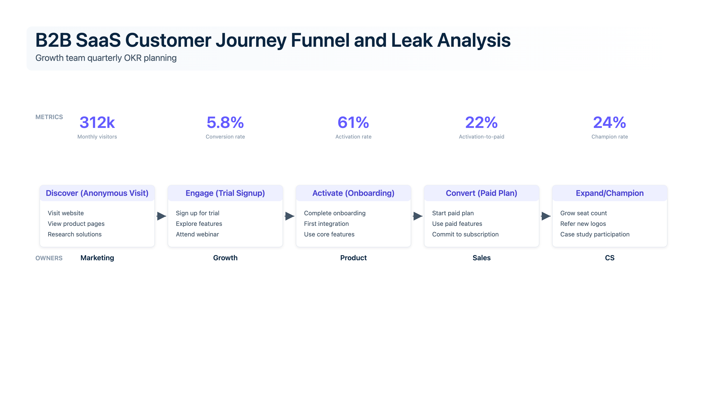
Before/after case study of our 18-month transformation from monolith to microservices. Before state: single PHP monolith on bare-metal servers, 14-day release cadence, 4-hour deploy windows requiring downtime, single MySQL master writing 8k QPS at peak, on-call engineer paged 4-6x per week, ~2000 lines per pull request average. After state: 47 microservices running on Kubernetes (AWS EKS), continuous deploy with ~120 deploys/day, zero-downtime blue-green rollouts, per-service databases (mostly PostgreSQL + Redis) with no single point handling more than 3k QPS, on-call paged ~1x per week, ~180 lines per PR average. The transition mechanism: explicit strangler-fig migration with feature flags and traffic shadowing. Audience: engineering all-hands case study presentation.
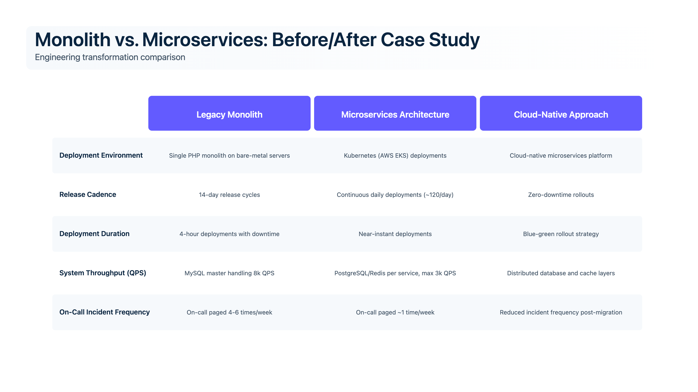
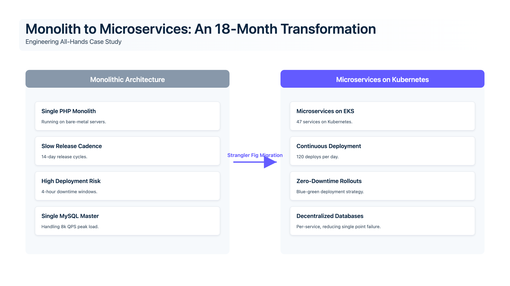
A hero image for our marketing campaign about the future of cloud computing. We are making the case for serverless architectures as the next generation of application deployment — the inevitable evolution beyond Kubernetes complexity. Three key benefits to highlight in supporting callouts: (1) Ship features 4x faster with zero infrastructure overhead, (2) Pay only for actual execution — typical 60-80% cost reduction vs always-on containers, (3) Infinite elasticity from 0 to 100k QPS with no capacity planning. The narrative: serverless is to containers what containers were to VMs — a step-change in developer productivity that becomes obvious in retrospect. Audience: CTO-targeted pitch deck cover slide.
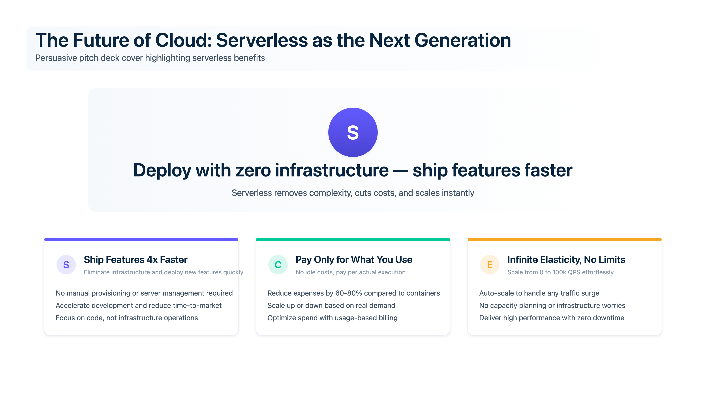
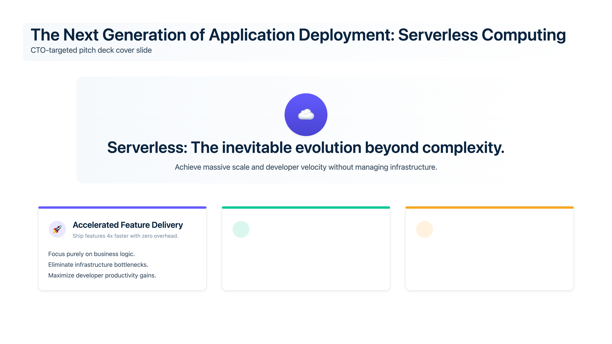
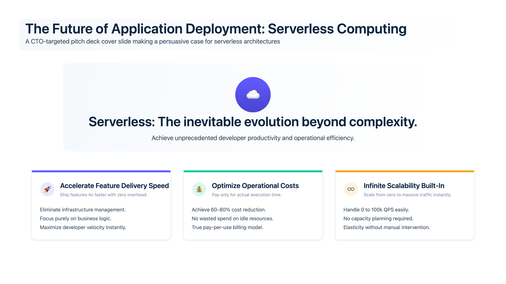